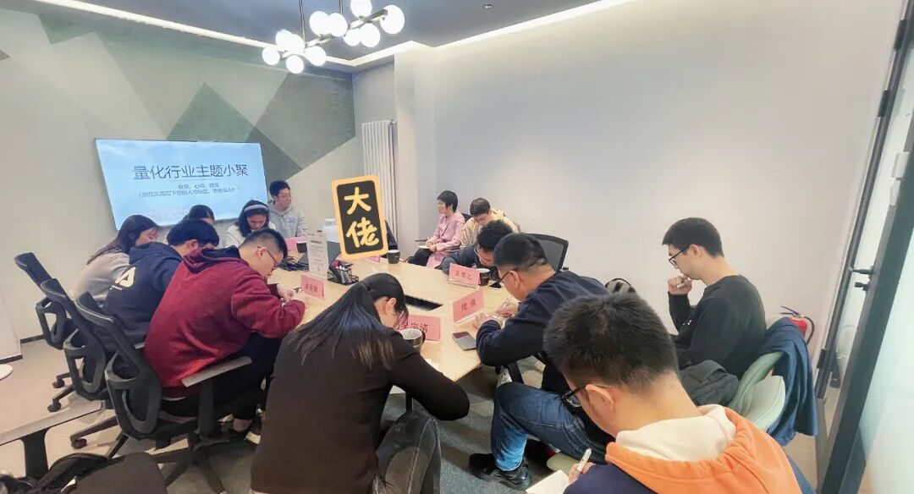

主题回顾
本次主题：量化研究员职业发展图鉴
主题背景：根据中国量化白皮书数据显示，截止2022年12月末，在协会备案登记的私募证券基金管理人数为8556家，其中涉及量化策略的机构共计2293家，量化私募中100亿以上规模共计39家，50100亿规模共计36家，2050亿规模共计126家，10~20亿规模共计184家。随着互联网行业热度递减，部分头部人才跻身量化行业，量化求职越来越卷，私募中的人才大战也越发激烈，找到一份称心如意的实习和全职难上加难。
交流话题：1.在当今的市场环境下，我们应该如何提升自己的行业竞争力？2.在求职面试的道路上会遇到哪些坑，如何擦亮眼睛？3.小私募成长性高但不稳定，大私募稳定但螺丝钉，我们应该如何选择？4.如果在每段实习中叠加自己的独特性？5.研究员到PM的成长过程中起决定性因素的是什么？
小聚成员
本次活动根据大家填写的报名表，依照“深度交流+多元讨论”的主旨，一共邀请15位小伙伴参与，其中从事量化行业全职工作的伙伴7位，目前在量化行业的实习的伙伴5位，对量化有兴趣且专业相关的伙伴3位，值得一提的是，参与本次小聚的全职伙伴所在公司多为知名百亿私募。

活动反馈
了解了实习生心态和工作需求、了解了不同公司的特点、了解了不同量化研究员的成长经历、希望更多量化专业人士参与。——量化CTA Quant一枚
很高兴跟非常多的PM、QR、HR、Intern一同进行量化方面的交流，解决一些信息之间的差异，总结了以下几点：1.提升自己的差异化能力，做出边际收益；2.注意长期收益；3.更多的了解行业，不随波逐流，享受竞争，找到自己喜欢的事；4.正视国内外差异，向优秀的人学习。——RUC大四的Quant初学者
这次收获非常大，能够和资深的从业人员线下交流，极大的开阔了眼界，加深了我对行业的了解，有机会还想继续参加该活动。——量化萌新一枚
认识量化朋友，感受量化行业。——数据科学与云计算领域Dev 刘腾蛟
今天的活动收获颇多。一方面在各量化机构的同学和工作者分享自己的求职路程，另一方面也有资深的管理人和前辈分享了自己对行业前景的看法和人才发展理念。无论是“中国与美国量化的对比”还是“如何平衡长期主义和短期业绩压力”，诸如此类的问题都能得到多元观点的解答。希望这一活动能长期举办，并有更多背景的同学和业界大佬能够参与分享。——某在量化中实习探索的本科小白
结识同行和对行业有兴趣的同学们，向头部公司学习先进的经验、行业交流见闻，聆听不同身份同仁们对问题的不同视角解读，感谢主办方让初入行的我看到更有深度的信息。ps.会场很好，地点方便！——百亿私募爱观鸟的HR小姐姐
这次活动遇到了很多优秀的同行、前辈，大家对自己工作中遇到的痛点、需求、经验的慷慨分享，让我对行业有了更全面和深刻的认识，未来可能也可以少踩一些坑。一些前辈关于工作时认识的提点，让我对继续量化之路更加坚定和有信心，感谢主办方的组织！——一只努力打怪的量化小白
今天的分享会遇到了几位乐于分享的前辈，作为一个新人，对量化行业的职业发展有了更长远的认识，今后期待能有更多计划参与交流会，遇到同行人很开心！——某量化研究从业新人
感谢主办方的组织，很开心这次可以认识到各位研究员和PM老师、HR姐姐哥哥，以及很优秀的同辈们，今天学习到很多对Quant新人有用的建议，求职、找实习的战术，实习中提升能力的方式等等。——在中小私募实习的Quant
了解到了更多关于业界的知识&（更重要的是）工作的体会。在未来的求学和求职方向上有了更明确的想法。结识了众多非常优秀的同龄人、学长学姐以及业内前辈。祝愿活动越办越顺利！——热爱数学的金融系学生
认识了各位有相同求职方向、相同志向的朋友，以后也可能有更多机会交流。听了很多前辈对市场、行业的心得分享，以及从业经验的分享，对行业看法更深入一些，对求职有更深的理解。——清华数学22硕 刘江灿 百亿私募实习生
认识了一些同行，了解更多行业信息，以后可以多交流。——Jacky
有以下收获：1.对于当下量化行业状况有了全面的了解；2.在多位有从业者的真实视角下学到关于求职技术、求职规划等等上的知识；3.观摩各个大佬的交流丰富了各方面的储备。——某位Quant小白
同样的行业，不同的身份，有PM、HR、QR、Dev、Intern，组成结构的多样性带来的是对同一个问题视角的多元，对一个问题你来我往的讨论中，我学到了非常多。在轻松愉快的周六下午见见同路人，听听大家的想法和建议，感觉很不错，期待下一场！——某北京私募HR
大家的收获札记